🌍 Dashboard de Análisis Exploratorio de Datos (EDA)
Calidad del Aire - Lima, Perú
📊 Resumen del Análisis
Este dashboard presenta el análisis exploratorio completo de los datos de calidad del aire de Lima, incluyendo análisis temporal, espacial y de correlaciones.
⏰ Análisis Temporal
Vista General Temporal
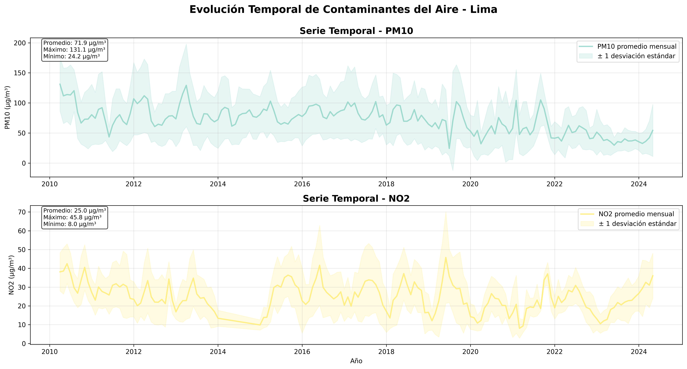Evolución de contaminantes a lo largo del tiempo con tendencias y variabilidad.
Patrones Estacionales
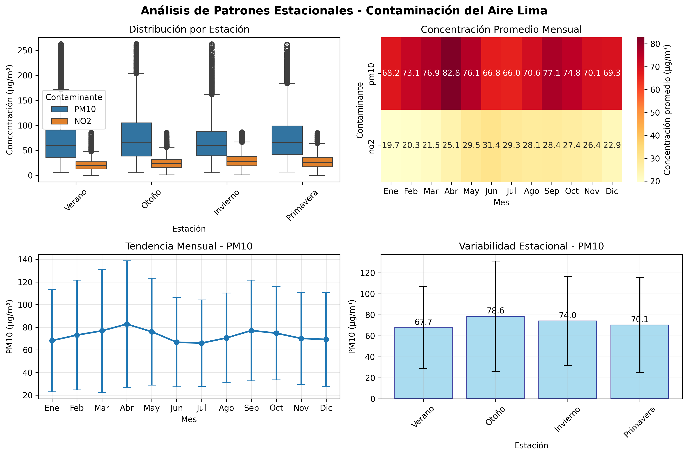Análisis de variaciones estacionales y climáticas en la contaminación.
Patrones Diarios
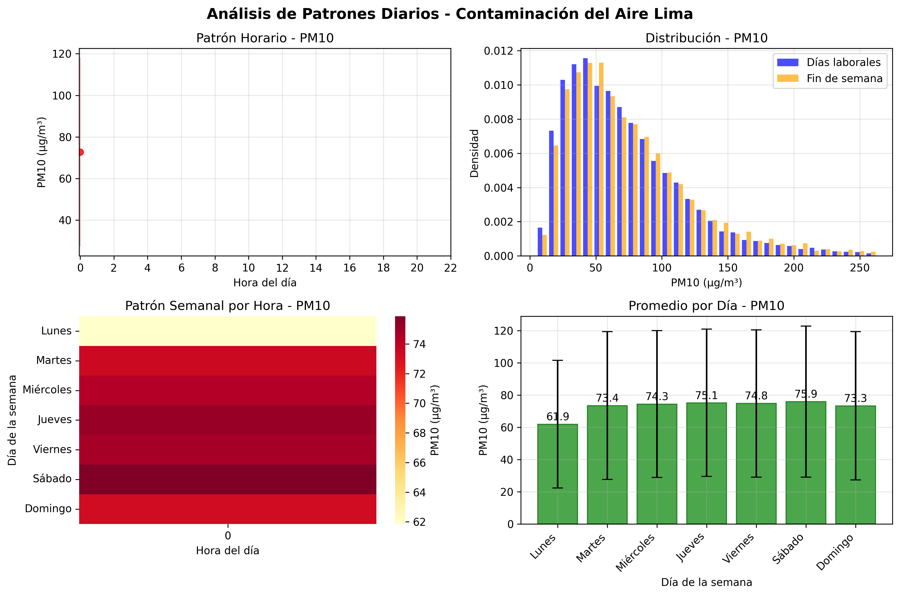Patrones horarios y diferencias entre días laborales y fines de semana.
Análisis de Tendencias
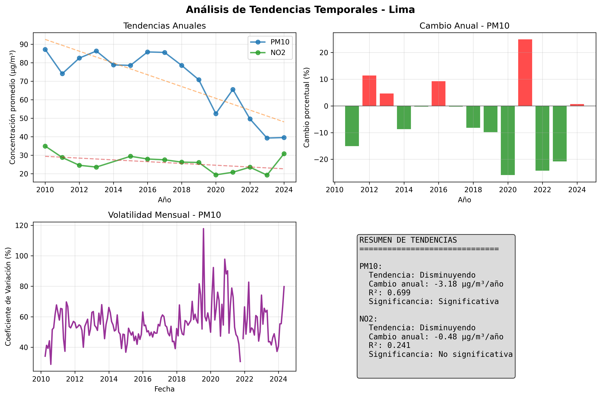Tendencias a largo plazo y cambios significativos en el tiempo.
🔄 Línea de Tiempo Interactiva
Ver Timeline InteractivoExplora la evolución temporal de los contaminantes con gráficos interactivos.
🗺️ Análisis Espacial
Comparación entre Estaciones
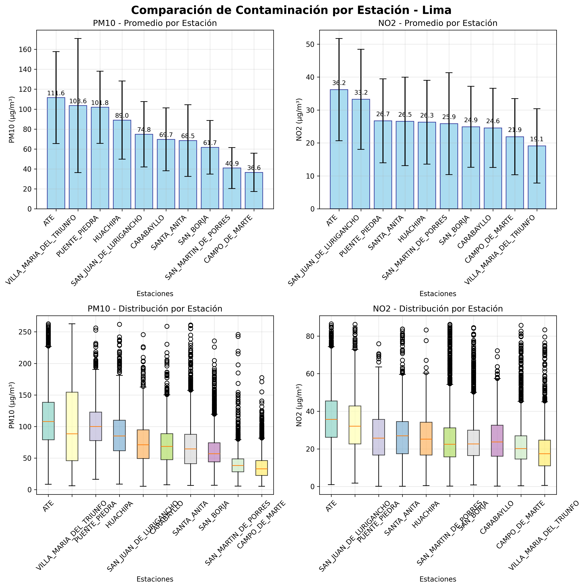Niveles de contaminación y variabilidad por estación de monitoreo.
Mapa de Calor Espacial
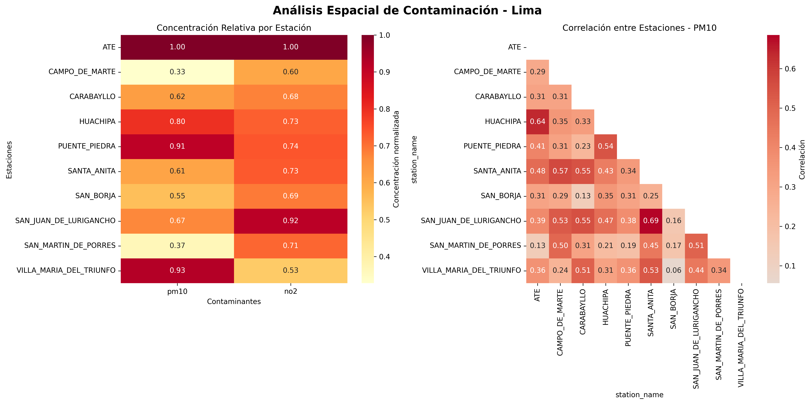Correlaciones espaciales entre estaciones y distribución de contaminantes.
Patrones Espaciales
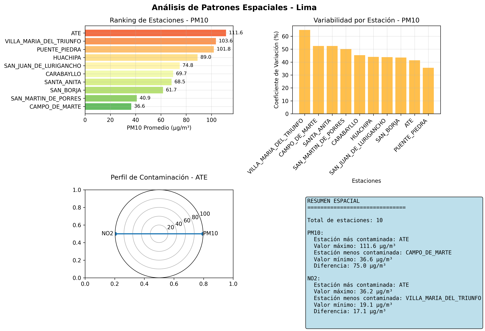Análisis de dispersión espacial y ranking de estaciones más contaminadas.
Análisis de Distancia

Correlación espacial basada en distancia geográfica entre estaciones.
🌍 Mapa Interactivo
Ver Mapa InteractivoMapa interactivo con ubicación de estaciones y niveles de contaminación.
🔗 Análisis de Correlaciones
Mapa de Correlaciones
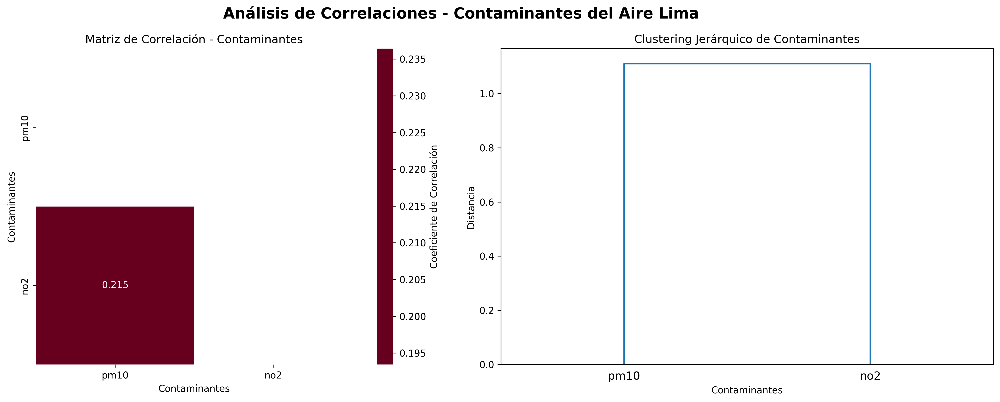Correlaciones entre diferentes contaminantes y clustering jerárquico.
Correlaciones con Características
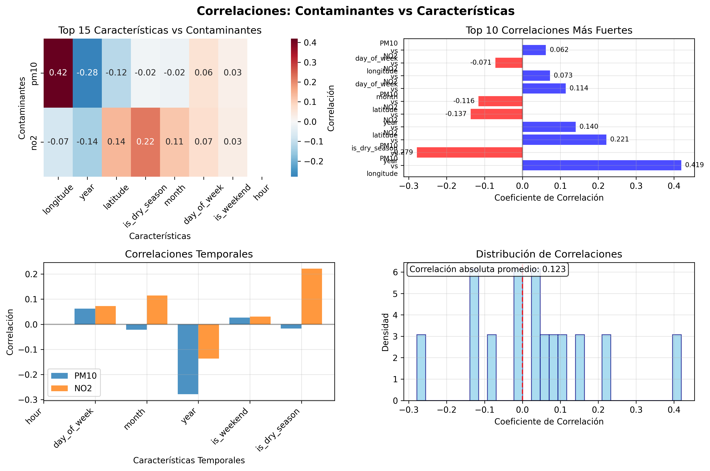Relaciones entre contaminantes y variables temporales/meteorológicas.
Matriz de Dispersión
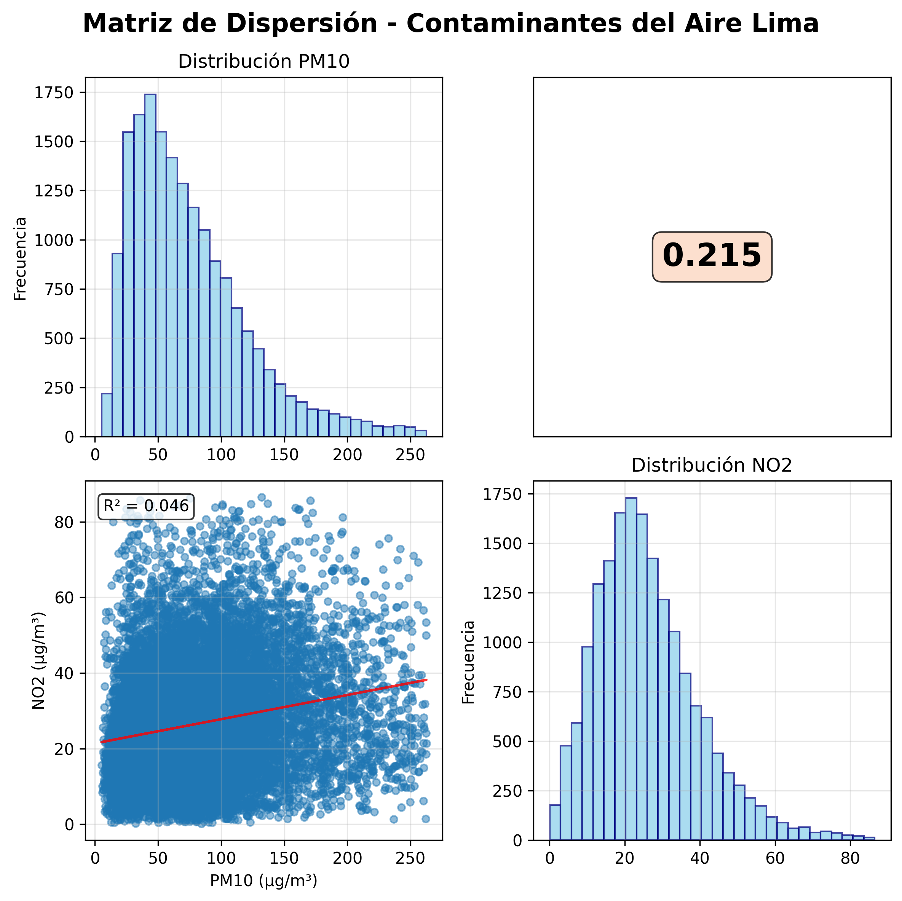Relaciones bivariadas entre todos los contaminantes.
Análisis PCA
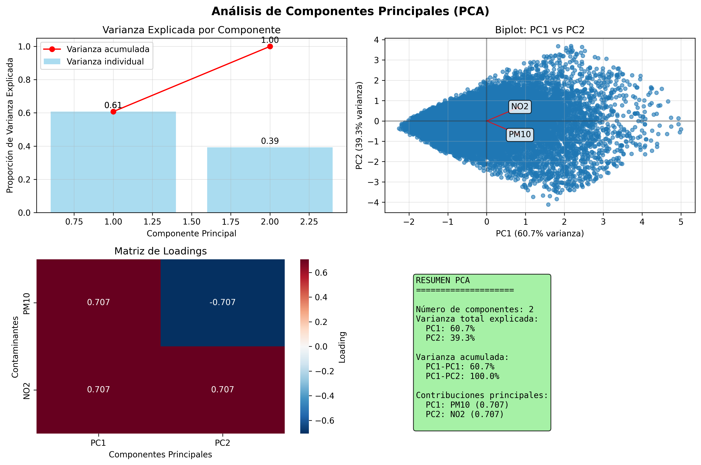Análisis de componentes principales y reducción de dimensionalidad.
📊 Correlaciones Interactivas
Ver Correlaciones InteractivasExplora las correlaciones entre contaminantes con gráficos interactivos.
📋 Reportes y Documentación
📊 Reporte de Correlaciones
Descargar ReporteAnálisis detallado de correlaciones y patrones estadísticos.
🎯 Conclusiones Principales
- Patrones Temporales: Se identificaron patrones estacionales y horarios claros en la contaminación
- Variabilidad Espacial: Diferencias significativas entre estaciones de monitoreo
- Correlaciones: Relaciones fuertes entre ciertos contaminantes
- Tendencias: Tendencias temporales identificadas para planificación de políticas